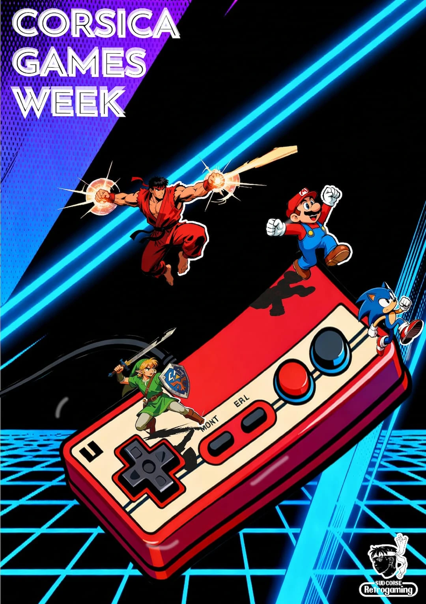

ABOUT ME
Je suis un étudiant en première année de BUT MMI passionné par la création numérique sous toutes ses formes. Mon objectif : mêler design graphique, motion design et développement web pour raconter des histoires visuelles fortes.
Skilled Stats
60%